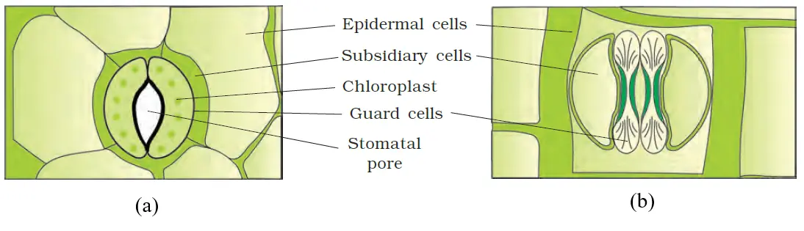
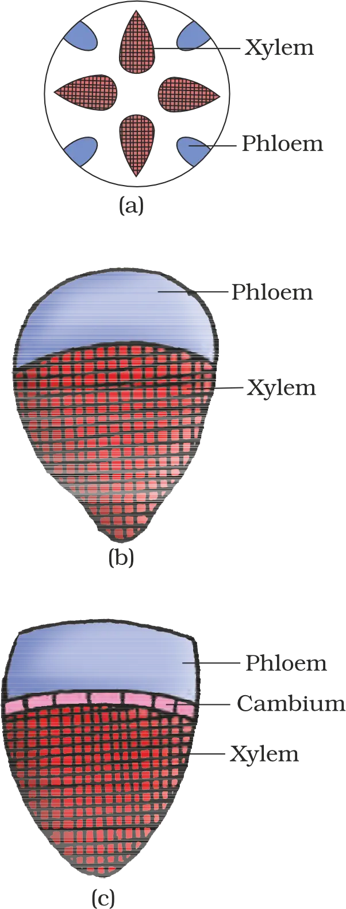
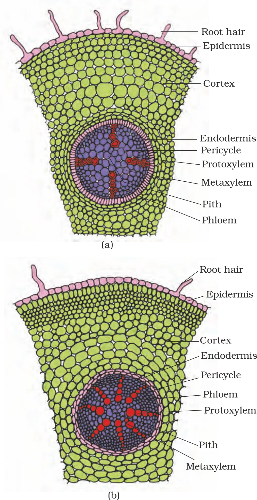
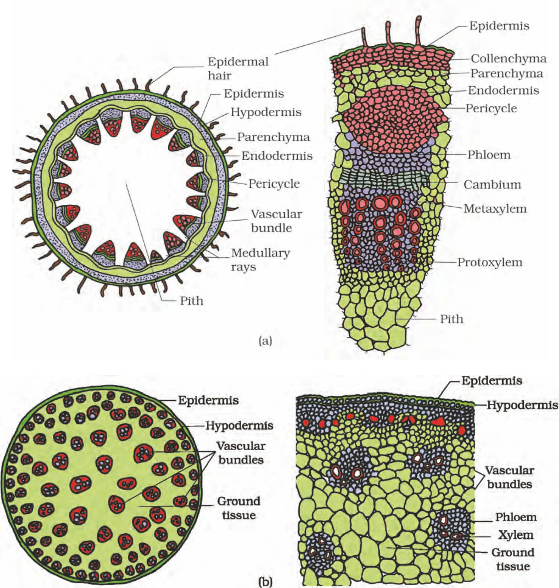
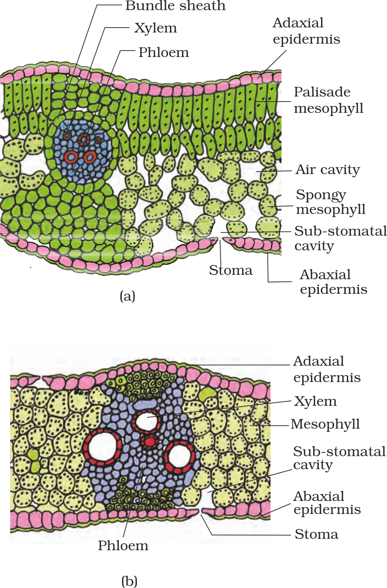

ANATOMY OF FLOWERING PLANTS
Anatomy of Flowering Plants: Introduction
Cells
basic unit
→
basic unit
Tissues
→
Organs
- Different organs show different internal structure.
- Among angiosperms, monocots and dicots are anatomically different.
- Internal structures also show adaptations to diverse environments.
6.1 The Tissue System
Epidermal tissue systemOutermost covering; protection + exchange structures
Ground (fundamental) tissue systemAll tissues except epidermis and vascular bundles; mainly simple tissues
Vascular (conducting) tissue systemXylem + phloem arranged as vascular bundles; transport
6.1.1 Epidermal Tissue System
- Epidermal cells
- Stomata
- Epidermal appendages: trichomes and hairs
- Made of elongated, compactly arranged cells forming a continuous layer
- Usually single-layered
- Epidermal cells are parenchymatous with small cytoplasm lining the wall and a large vacuole

- Two guard cells enclosing a stomatal pore
- Guard cells are bean-shaped (most plants); in grasses they are dumb-bell shaped
- Guard cell walls: outer wall thin (away from pore); inner wall thick (towards pore)
- Guard cells possess chloroplasts and regulate opening and closing of stomata
- Subsidiary cells: specialised epidermal cells near guard cells (special shape/size)
- Root hairs: unicellular elongations of epidermal cells; absorb water and minerals from soil.
- Trichomes (on stem/shoot): epidermal hairs; usually multicellular; may be branched/unbranched, soft/stiff, and may be secretory.
6.1.2 The Ground Tissue System
ParenchymaCommon ground tissue cells in many regions
CollenchymaSupport in young parts (noted later in stem hypodermis)
SclerenchymaMechanical strength (simple tissue component of ground tissue)
- Parenchyma usually present in cortex, pericycle, pith and medullary rays of primary stems and roots.
- In leaves, ground tissue is mesophyll = thin-walled, chloroplast-containing cells.
6.1.3 The Vascular Tissue System
XylemComplex conducting tissue
PhloemComplex conducting tissue

- Dicotyledonous stems: cambium present between phloem and xylem → bundles can form secondary xylem and secondary phloem → called open vascular bundles.
- Monocotyledons: vascular bundles have no cambium → no secondary tissues → called closed vascular bundles.
RadialXylem and phloem arranged alternately on different radii; typical of roots
ConjointXylem and phloem together on the same radius; common in stems and leaves
6.2 Anatomy of Dicotyledonous and Monocotyledonous Plants
To understand tissue organisation of roots, stems & leaves ➜ study the transverse sections (T.S.) of the mature zones of these organs.

6.2.1 Dicotyledonous Root (Sunflower root, T.S.)
Internal tissue organisation (outer → inner) in T.S.:
Epiblema (outermost)
→
Cortex
→
Endodermis
→
Pericycle
→
Vascular tissues + Pith (stele region)
- Epiblema is the outermost layer; many epiblema cells form unicellular root hairs.
- Cortex: several layers of thin-walled parenchyma with intercellular spaces.
- Endodermis (innermost cortex layer): single layer of barrel-shaped cells with no intercellular spaces.
- Pericycle: a few layers of thick-walled parenchymatous cells just inside endodermis.
- Functions from pericycle (explicitly stated):
- Initiation of lateral roots
- Initiation of vascular cambium during secondary growth
- Pith: small or inconspicuous.
- Conjunctive tissue: parenchyma lying between xylem and phloem.
- Usually 2 to 4 patches of xylem and phloem.
- Later, a cambium ring develops between xylem and phloem.
6.2.2 Monocotyledonous Root
Monocot root anatomy is similar to dicot root in many respects… but watch the xylem bundles & pith size!
- Has epidermis, cortex, endodermis, pericycle, vascular bundles and pith.
- Compared with dicot root (fewer xylem bundles), monocot root usually has more than six xylem bundles → polyarch condition.
- Pith is large and well developed.
- No secondary growth in monocotyledonous roots.
MONO = MANY
6.2.3 Dicotyledonous Stem (young stem, T.S. — beginning)
The transverse section of a typical young dicot stem shows:

- Epidermis is the outermost protective layer.
- Epidermis is covered with a thin cuticle and may bear trichomes and a few stomata.
- Cortex = multiple layers of cells between epidermis and pericycle.
HypodermisFew layers of collenchyma below epidermis; mechanical strength to young stem
Cortical layers (below hypodermis)Rounded thin-walled parenchyma; conspicuous intercellular spaces
EndodermisInnermost cortex layer; rich in starch → “starch sheath”
Monocotyledonous Stem
Diagnostic anatomical features (T.S.)
HypodermisSclerenchymatous (mechanical strength)
Ground tissueLarge, conspicuous, parenchymatous; not clearly separated into cortex/pith
Vascular bundlesNumerous, scattered throughout ground tissue
Bundle sheathEach vascular bundle surrounded by sclerenchymatous sheath
Bundle typeConjoint (xylem + phloem together) and closed (no cambium)
Phloem parenchymaAbsent
- Scattered vascular bundles = key monocot stem character (contrast: ring arrangement in dicot stem).
- Closed vascular bundles (no cambium) → typical monocot stem feature.
- Peripheral vascular bundles smaller than centrally located ones (general trend).
- Water-containing cavities present within vascular bundles.
Dorsiventral (Dicotyledonous) Leaf

Epidermisouter protective layer (both sides)
Mesophyllphotosynthetic tissue between epidermises
Vascular systemveins + midrib with vascular bundles
1) Epidermis (adaxial and abaxial)
- Adaxial epidermis = upper surface epidermis.
- Abaxial epidermis = lower surface epidermis.
- Epidermis on both sides has a conspicuous cuticle.
- Stomata are generally more numerous on abaxial epidermis than on adaxial epidermis.
- Adaxial epidermis may even lack stomata.
2) Mesophyll
Palisade parenchymaAdaxially placed; elongated cells arranged vertically and parallel
Spongy parenchymaBelow palisade; oval/round cells, loosely arranged with large intercellular spaces
Air cavitiesNumerous large spaces between spongy cells aid gas exchange
Upper (adaxial) side
→Palisade
Lower side
→Spongy (up to lower epidermis)
3) Vascular system (veins and midrib)
- Vascular bundles are seen in veins and midrib.
- Size of vascular bundle ∝ size of vein (bigger vein → bigger bundle).
- In dicot leaves, reticulate venation shows veins of varying thickness; this is reflected in varying bundle sizes.
- Vascular bundles are surrounded by a layer of thick-walled bundle sheath cells.
Isobilateral (Monocotyledonous) Leaf
Key differences from dorsiventral leaf
Stomata distributionPresent on both epidermal surfaces
Mesophyll differentiationNot differentiated into palisade and spongy parenchyma
Venation reflection in anatomyParallel venation → near similar vascular bundle sizes (except main veins)
Bulliform cells (grasses)
Bulliform cells absorb water → turgid
→
Leaf surface exposed (leaf opens/unrolls)
Water stress → bulliform cells flaccid
→
Leaves curl inwards
→
Minimises water loss
Chapter Summary
- Plant tissues are broadly meristematic (apical, lateral, intercalary) and permanent (simple, complex).
- Main tissue functions: food assimilation & storage, transport of water/minerals/photosynthates, and mechanical support.
- Three tissue systems: epidermal, ground, vascular.
- Epidermal tissue system consists of epidermal cells, stomata, epidermal appendages.
- Ground tissue system forms bulk; divided into cortex, pericycle, pith.
- Vascular tissue system formed by xylem and phloem; vascular bundle types depend on presence of cambium and relative location of xylem & phloem.
- Monocots vs dicots: differ in type, number, and location of vascular bundles.
- Secondary growth occurs in most dicot roots and stems.